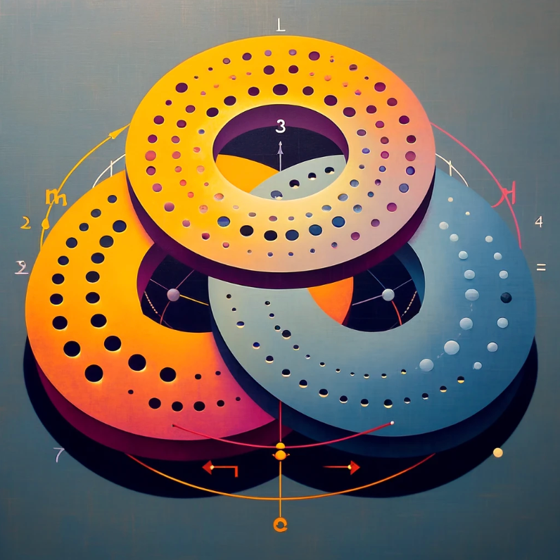

What is a Set, a Group, a Ring, and a Field?
Exploring Fundamental Abstract Algebra

More on Sets
Set
A set is:
any collection of distinct objects, considered an object in its own right.
These objects are called the elements or members of the set.
Pretty much anything you want to define as a "group of distinct objects" can be defined as a set. It is a purposefully, and sometimes usefully, general definition.
More on Groups
Group
A group is:
a set equipped with an operation.
This operation must combine any two elements of the set, to form a third element (which must also belong to the set). Importantly, this operation must have two qualities. It must:
- be associative
- have an identity element
See below for a definition of associativity and an identity element.
Furthermore, for a set to also be a group:
every element must have an inverse with repect to the operation defined on it
Each of these requirements is defined more specifically, below.
As a an intuitive example, the real numbers \mathbb{R} can be considerd a set (fairly obviously), but... is the set of real numbers a group?
Yes, the set of Real numbers \mathbb{R} forms a group when the operation considered is addition; meaning that the set of real numbers with the operation of addition satisfies all the properties of a group (closure, associativity, identity element, inverses) making it actuallly an abelian group (see below, for more details).
Associative Property
The operation defined for a group must be associative. An operation is "associative" if changing the grouping of the operands does not change the result. If the operation is denoted by *, then for any elements a, b, c :
always holds.
So what are the identity elements for the Real numbers?
In the set of real numbers, the identity elements are:
-
0 for the addition operation, and
-
1 for the multiplication operation
because:
- x + 0 = x , and
- x \ast 1 = x
This is why you often see references to the "additive idenity element" or the "multiplicative identity element". These elements, in any group, are analogous to 0 and/or 1 , in the set of real numbers, when considering the operations addition and multiplication.
Identity Element
A group must have an identity element, for the operation defined on it. An identity element is an element in a set that, when combined with any other element of the set through the operation, leaves the other element unchanged.
For a binary operation * defined on a set S , an element e \in S is an identity element if, for every element a \in S :
What does this mean in the real numbers?
Considering the operation of addition: the inverse of 3 is -3 , because: $$ 3 + (-3) = 0 $$ and 0 is the identity element with respect to addition (see above).
Consdidering the operation of mutiplication: the inverse of 3 is 1/3 , because: $$ 3 \ast ({1 \over 3}) = 1 $$ and 1 is the identity element with respect to multiplication (see above).
Inverse Element
For a set to be a group, each element in it must have an inverse.
An inverse element is an element of the set that, when combined with another element, under the operation, results in the identity element (defined above).
For an operation * defined on a set: if e is the identity element, then for any element a in the set, and element b (often denoted as a^{-1} ) is called the inverse of a if:
that is:
More on Abelian Groups
Abelian Group
An abelian group is a group in which the group operation is also commutative (as well as associative).
Commutative Property
An operation is commutative if: $$ a \ast b = b \ast a $$
for all elements a, b in the set.
More on Rings
Ring
A ring is a set equipped with two binary operations (often referred to as "addition" and "multiplication") where:
- "addition" forms a group - that is:
- "addition" is associative
- "addition" has an identity element
- all elements have an inverse under addition
- "multiplication" is associative - that is:
- a * b = b * a
- the distributive property holds - that is:
- a \ast ( b + c ) = (a \ast b) + (a \ast c)
Key Properties of a Ring
We've spent some time adding defininitions to definitions:
- a set
- a group (a set with extra properties)
- a ring (a set with yet more added properties) ...
So let's look at all the properties of ring once we put them together:
For a ring {R} , for all a, b, c \in {R} :
-
Closure under addition and multiplication:
- a + b \in {R} \text{, and } \quad
- a \times b \in {R}
-
Associativity of addition and multiplication:
- (a + b) + c = a + (b + c) \text{, and } \quad
- (a \times b) \times c = a \times (b \times c)
-
- a + b = b + a
-
Existence of an additive identity element:
- there exists \mathbb{0} \in {R} , such that a + \mathbb{0} = a
-
Existence of the additive inverse elements:
- for every a \in R , there exists -a \in R such that: $$ a + (-a) = \mathbb{0} \quad \text{ (the additive identity element)} $$
-
- a \times (b + c) = (a \times b) + (a \times c)
Optional Properties:
-
Multiplicative identity: in some definitions, particularly for rings that are also termed unital rings or unitary rings, there exists an element \mathbb{1} \in {R} (distinct from \mathbb{0} ) such that: $$ a \ast \mathbb{1} = a \quad \text{and} \quad \mathbb{1} \ast a = \mathbb{1} \quad \text{for all} \quad a \in {R} $$
-
Commutativity of multiplication: in a commutative ring, for all a, b \in R , a \ast b = b \ast a . However, this property is not required for a set to be a ring. Without this property, the set is called a "non-commutative ring" If satisfied, the ring is called a "commutative ring".
More on Fields
Field
A field is a set equipped with two binary operations (usually referred to as addition and multiplication) that satisfy:
-
- a + b \in F , a \times b \in F (Wolfram MathWorld)
-
- (a + b) + c = a + (b + c) , and
- (a \times b) \times c = a \times (b \times c) (Wolfram MathWorld)
-
- a + b = b + a , and
- a \times b = b \times a (Wolfram MathWorld)
-
- There exists \mathbb{0} such that a + \mathbb{0} = a
- There exists \mathbb{1} such that a \times \mathbb{1} = a (Wolfram MathWorld)
-
- For every a , there exists -a such that a + (-a) = 0 (Wolfram MathWorld)
-
- For every nonzero a , there exists a^{-1} such that: a \times a^{-1} = 1 (Wolfram MathWorld)
-
- a \times (b + c) = (a \times b) + (a \times c) (Wolfram MathWorld)
Relationship to Rings
A field is a ring in which:
- Every nonzero element has a multiplicative inverse.
- Multiplication is commutative.
Abstract Algebra
Abstract algebra is a branch of mathematics that studies algebraic structures such as groups, rings, and fields. These structures form the backbone of various mathematical disciplines, including:
- Number Theory
- Topology
- Algebraic Geometry
Abstract algebra explores deep relationships between these structures using axioms such as associativity, commutativity, and inverses. This field is fundamental to both theoretical and applied mathematics, particularly in solving polynomial equations, understanding symmetry, and developing modern cryptographic systems.